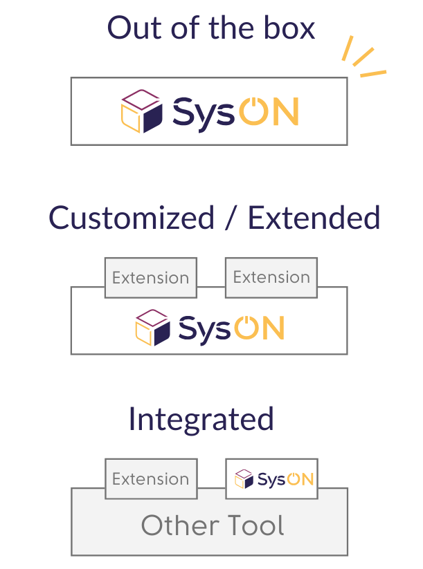
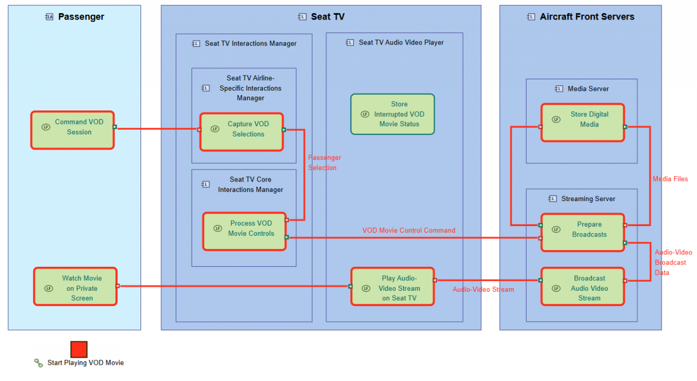

{% include block_heading.html
title="Project Lead"
%}


SysON is an open-source, web-based MBSE tool for creating and editing SysML v2 models.
It combines graphical modeling, standards-based interoperability, and a flexible environment for systems engineering.
" href_1="https://doc.mbse-syson.org/" btn_txt_1="Get Started" target_1="self" href_2="#community" btn_txt_2="Stay tuned" target_2="self" img_href="" img_target="self" img_src="images/screenshots/syson-overview-2025.png" img_alt="SysMLv2 diagram authored with SysON" %}SysON was presented during the Vendor Roadmaps and Implementation Status session of the MBSE Workshop held as part of the INCOSE International Workshop 2025, in Seville, Spain, on February 1, 2025.
We're thrilled to share that we've already made significant progress toward our goals!
As demonstrated in the quick demo, SysON is up and running—packed with powerful features and designed with a strong focus on user experience.
The project is on the right track and is already generating considerable interest.
Discover the video used to present SysON at this session.
Model-Based Systems Engineering (MBSE) helps engineers design, analyze, and manage complex systems
using models as a shared source of engineering information.
SysON is ready to use for editing SysML v2 models out of the box.
However, if you are a large organization with specific modeling methodologies and tooling integration constraints, or a software provider delivering cutting-edge engineering solutions, you may need a native SysML v2 modeling environment tailored to your needs.
SysON is designed for this, offering flexibility and seamless integration, making it adaptable to your specific requirements or embeddable within another application:
Examples:

Obeo provides expertise to help you integrate SysON within your organization, and tailor or extend it to fit your needs.
Contact UsObeo Enterprise for SysON is a professional offering built on top of SysON. It enhances SysON with enterprise features: Security & Permissions, Team Collaboration, Project Lifecycle Management.
Learn moreObeo is also preparing a secure cloud-based offering to provide SysON as a fully hosted SaaS solution, enabling users to access and use it without any deployment on their machines or servers.
Stay tuned…SysML v2 provides a powerful language for systems modeling.
But a modeling language alone does not tell engineers how to structure their engineering activities or approach complex system architectures.
Capella for SysON is an open-source extension that brings the Arcadia methodology, proven through years of industrial use, to the SysML v2 ecosystem.
By combining Arcadia's structured engineering approach with Capella-inspired graphical representations, it guides engineers through dedicated modeling activities, exposing the concepts and tools relevant to each stage of system design.
The result: the power and interoperability of SysML v2, with the methodological guidance needed to make modeling more accessible, consistent, and scalable.
Discover Capella for SysON
SysON is under active development and evolving rapidly.
Our team follows an agile 8-week release cycle, ensuring steady progress and frequent feature updates and bug fixes.
As some capabilities are still maturing, features and the user experience may change between releases.
We are fully committed to making SysON a best-in-class SysML v2 tool.
" %} {% include block_cols_text.html col="6" desc="Don’t miss any project updates:" %}